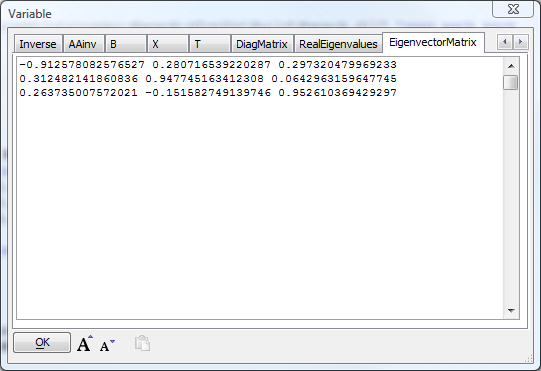

DotNet Example: Matrix Manipulation
Mapack is a C# class library for basic linear algebra. It computes Norm, Determinant, Cholesky, LU, QR, SVD, least squares and eigenproblems. See Lutz Roeder's siteThe following sample is an Xbasic script based closely on the C# example provided with Mapack. Read the code and the comments to understand, among other things, how to use .NET indexers
Copy the sample into a new script in Alpha Five, edit the path to the Mapack dll, and run it. Compare the results you get to running the compiled C# example.
'Register Mapack
dim sv as dotnet::services
dim assy as dotnet::assemblyreference
assy.FileName = "<your path here>\Mapack.dll"
if .not. sv.RegisterAssembly("Mapack",assy)
ui_msg_box("RegisterAssembly","Mapack not found at "+assy.FileName)
end
end if
dim p as p 'for display
'Exercise Mapack
'Create and populate matrix A
dim A as Mapack::Mapack::Matrix = new Mapack::Mapack::Matrix(3,3)
'Note: Alpha Five automatically translates Xbasic 1-based indexing to
' .NET 0-based indexers (class looks like an array)
A(1,1) = 2.0; A(1,2) = 1.0; A(1,3) = 2.0;
A(2,1) = 1.0; A(2,2) = 4.0; A(2,3) = 0.0;
A(3,1) = 2.0; A(3,2) = 0.0; A(3,3) = 8.0;
'Calculate and store determinant, trace, and norms of A
dim p.A as C = A.ToString()
dim p.Det as N = A.Determinant
dim p.Trace as N = A.Trace
dim p.Norm1 as N = A.Norm1
dim p.InfinityNorm as N = A.InfinityNorm
dim p.FrobeniusNorm as N = A.FrobeniusNorm
'Calculate the Singular Value Decomposition of A and store norm,
' condition, and rank
dim svg as Mapack::Mapack::SingularValueDecomposition = \
new Mapack::Mapack::SingularValueDecomposition(A)
dim p.Norm2 as N = svg.Norm2
dim p.Condition as N = svg.Condition
dim p.Rank as N = svg.Rank
'Calculate and store transpose and inverse of A
dim p.Transpose as C = A.Transpose().ToString()
dim p.Inverse as C = A.Inverse.ToString()
'A * A.Inverse should be the identity matrix, within epsilon
'Note that the matrix multiplication * operator is not supported,
' so we use the (static) Matrix.Multiply method
dim I as Mapack::Mapack::Matrix = \
Mapack::Mapack::Matrix.Multiply(A,A.Inverse)
dim p.AAinv as C = I.ToString()
'Note we could also have said:
' dim p.AAinv as C = A.Multiply(A,A.Inverse).ToString()
'Create and populate matrix B and solve the linear equation A*X=B
dim B as Mapack::Mapack::Matrix = new Mapack::Mapack::Matrix(3,3)
B(1, 1) = 2.0; B(1, 2) = 0.0; B(1, 3) = 0.0;
B(2, 1) = 1.0; B(2, 2) = 0.0; B(2, 3) = 0.0;
B(3, 1) = 2.0; B(3, 2) = 0.0; B(3, 3) = 0.0;
dim p.B as C = B.ToString()
dim X as Mapack::Mapack::Matrix = A.Solve(B)
dim p.X as C = X.ToString()
'Check the result: T = A*X should be equal to B
dim T as Mapack::Mapack::Matrix = A.Multiply(A,X)
dim p.T as C = T.ToString()
'Calculate the Eigenvalue Decomposition of A and store the
' Eigenvalues and Eigenvector matrix
dim eigen as Mapack::Mapack::EigenvalueDecomposition = \
new Mapack::Mapack::EigenvalueDecomposition(A)
dim p.DiagMatrix as C = eigen.DiagonalMatrix.ToString()
dim p.RealEigenvalues as C
for each eigenvalue in eigen.RealEigenvalues
p.RealEigenvalues = p.RealEigenvalues + eigenvalue + crlf()
next
p.EigenvectorMatrix = eigen.EigenvectorMatrix.ToString()
'Note: If we used a for loop as below, we would have to use
' 0-based indexing because Alpha Five does not automatically
' correct the offset function calls
'dim index as n
'for index = 0 to eigen.RealEigenvalues.Length-1
' p.RealEigenvalues = p.RealEigenvalues + \
' eigen.RealEigenvalues.GetValue(index) + crlf()
'next
'There are a few more lines to the Mapack C# example but they are
' just multiplication and are left as an exercise for the student
'Show the results: you can compare these to the output of the C# example
showvar(p)Running the above script will give you a pop-up window showing all the saved variables:

Running the C# Example program gives:
A = 2 1 2 1 4 0 2 0 8 A.Determinant = 40 A.Trace = 14 A.Norm1 = 10 A.NormInfinite = 10 A.NormFrobenius = 9.69535971483266 A.Norm2 = 8.62422264025397 A.Condition = 7.98847395632229 A.Rank = 3 A.Transpose = 2 1 2 1 4 0 2 0 8 A.Inverse = 0.8 -0.2 -0.2 -0.2 0.3 0.05 -0.2 0.05 0.175 I = A * A.Inverse = 1 1.38777878078145E-17 0 0 1 0 0 0 1 B = 2 0 0 1 0 0 2 0 0 A.Solve(B) 1 0 0 0 0 0 0 0 0 A * A.Solve(B) = B = 2 0 0 1 0 0 2 0 0 A = V * D * V D = 1.0795832454869 0 0 0 4.29619411425913 0 0 0 8.62422264025397 lambda = 1.0795832454869 4.29619411425913 8.62422264025397 V = -0.912578082576527 0.280716539220287 0.297320479969233 0.312482141860836 0.947745163412308 0.0642963159647745 0.263735007572021 -0.151582749139746 0.952610369429297 V * D * V' = 2 1 2 1 4 -1.11022302462516E-16 2 -1.11022302462516E-16 8 A * V = -0.985204008148176 1.20601274357339 2.56415801476184 0.337350484866818 4.07169719286952 0.554505743828331 0.284723895423112 -0.651228914677396 8.21552391537285 V * D = -0.985204008148176 1.20601274357339 2.56415801476183 0.337350484866819 4.07169719286952 0.554505743828331 0.284723895423113 -0.651228914677396 8.21552391537284
See Also
.NET indexers on MSDN.NET Framework Support in Alpha Five V11
DotNet::AssemblyReference
DotNet::Services
CreateObject Method
CallStaticFunction Method
ConstructGenericTypeName Method
GetStaticProperty Method
SetStaticProperty Method
RegisterClass Method
RegisterAssembly Method
RegisterNamespace Method
GenerateWebServiceClientFromURL Method
GenerateWebServiceClientFromWSDL Method
Preloaded .NET Classes V11
Writing Xbasic wrapper classes for .NET classes V11
DotNetPath Function
DotNet Examples V11